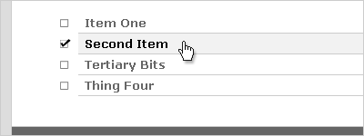

Unordered lists are one of the most pervasive elements on the web, probably just behind paragraphs and hyperlinks in terms of their bunny-like abundance. And for good reason: bulleted (i.e., unordered) lists are a great way to convey a bunch of related information in a rather small space, which is often the preferred way to read on (and thus, write for) the internet.
Last week, I showed you how to turn an ordinary, unassuming unordered list into a navigation bar. And then we made that nav bar even cooler with a bit of JavaScript. But sometimes, you just need a list to be a list. But that isn’t to say it has to be a boring looking list. Here are five different ways to style your unordered lists with CSS.
1: Change your Bullets
Sometimes, all your list needs is a new set of bullets to set it apart from all the other lists out there. For that, you’d turn to the list-style-type attribute, like so:
ul {
list-style-type: circle;
}
This sets your bullet type to a hollow circle, as shown in this example. And there are other list-style-types out there, as well. “Disc” is the default style, but “square” has a nice look, as well.
2: Add Margins and Padding
If you really want your list to stand out, you could do worse than to literally set it apart with a bit of margin and padding:
ul {
margin: 2em;
}
ul li {
padding-left: 1em;
margin-bottom: .5em;
}
As you can see in this example, our first rule applies a 2 em margin to all four sides of our unordered list – moving it away from the surrounding paragraphs both vertically and horizontally. The left padding on the list item puts a little space between the bullet and the text, adding to the airy feel. The margin on the bottom of the list item opens a bit of space between the individual items in our list.
3: Use an Image
One of the easiest ways to make your lists truly unique (and to ensure they mesh well with your site’s design) is to use images instead of bullets. Here’s how to do it:
ul {
list-style-image: url(check.gif);
}
Easy, no? Yet the effect is dramatic: all of our list items now have a checked box next to them instead of a bullet. And it doesn’t have to be a checkbox, either – it could be anything your creative little heart desires. One caveat to this technique is to remember that, unlike the default bullet types, these images won’t grow and shrink with your items if your readers change the text size.
4: Borders, Backgrounds and the Hover Class
For a unique list style that doesn’t make use of images, you could always use borders, background colors, and the :hover pseudo-class to set your list apart:
ul {
list-style: none;
margin: 1em 0;
padding: 0;
}
ul li {
font-weight: bold;
margin: 0;
padding: 3px 10px 5px 20px;
border-bottom: 1px solid #ccc;
color: #666;
}
ul li:hover {
color: #000;
background-color: #ddd;
}
In this example, we’re turning off the bullets altogether with a list-style: none rule, then styling the list items by changing their color, giving them a bit of padding, making them boldface, and setting a border along the bottom. Then, when the user hovers their mouse over the list item, it darkens slightly and we apply a pale gray background color, which would help the reader keep their place in a long list more easily.
Of course, IE6 doesn’t recognize the :hover class on anything other than anchors, so if you needed this to show up in IE6, you’d need to apply an anchor to your text… which is why this technique is usually reserved for sidebar links or lists of similar ilk.
The Whole Shebang
Of course, why stop at just using one of these techniques, when you could apply several at once? Here’s our mega-styled list:
ul {
margin: 1.5em;
}
ul li {
list-style-image: url(uncheck.gif);
border-bottom: 1px solid #ccc;
padding: .2em 0 .2em .5em;
font-weight: bold;
color: #666;
}
ul li:hover {
cursor: pointer;
list-style-image: url(check.gif);
background-color: #f2f2f2;
color: #000;
}
In this attractive example, we are:
- Setting a margin on the list to set it apart,
- Setting padding and a border on the list item,
- Using an image instead of a bullet,
- Changing the font-weight and color of the text, and
- Using the :hover pseudo-class to change the cursor type, set a new list image, apply a subtle background, and darken the text.
Now that’s a nice looking list. Of course, as before, our hover elements won’t show up in IE6 (though IE7 will handle them fine). But our list is still pretty darn distinctive even without the hover class.
These are just five of a nearly infinite variety of options. What techniques do you use to set your lists apart? Oh, and be sure to subscribe to our feed, because later this week I’ll show you a trick for styling nested ordered lists that really makes them more attractive and user-friendly.
Rob, this is a really nice and well written introductory article about HTML lists and how to style them. Beginning with very basic examples and combining them together at the end makes all of the concepts really easy to understand.
HTML lists are indeed one of the main building blocks of today’s semantic web and it is therefore important to know the basics and not to be “afraid” of experimenting with them.
Don’t forget when applying margins and padding that IE and Firefox have different default marign/padding values for lists. That means it’s a good idea to explicitly set both the margin and padding on both ul and li, or to use one of those “whitespace reset” options.
Here’s an oldie but a goodie on the same subject from A List Apart:
http://www.alistapart.com/articles/taminglists/
Kaspars: Thanks for the kind words. :)
Justin: Good point. That might have to come in a second article. In fact, it probably will come up in the next article. :)
Dave: Thanks for the link! It’s old, as you said, but still relevant information.
Pingback: RUDEWORKS
Very useful, thanks for the tips :) Looking for the ordered list one as well.
Pingback: CSS-Styled Lists: 20+ Demos, Tutorials and Best Practices
Pingback: How To Design The Perfect List
Very interesting article here, thanks.
Yes, the padding is a pain across diferent browsers, as can be the list-style-image positioning. Mike.
Pingback: 5 Beispiele, wie Sie ungeordnete Listen formatieren können | Sura 1.at
Pingback: Styling your Lists: 20+ Brilliant How to’s and Best Practices | DevSnippets
Nice run through of list styling capabilities though I would avoid advocating list styling that simulates user interaction as it gives the user the false impression that a list serves as an input element.
Pingback: Styling your Lists: 20+ Brilliant How to’s and Best Practices
Hey useful tut you have here 5 ways to set your unordered lists apart – very pleasing results.. Thanks!
Pingback: eagrapho » Styling your Lists: 20+ Brilliant How to’s and Best Practices
Pingback: Styling your Lists: 20+ Brilliant How to’s and Best Practices - Huntsville Talk
Pingback: Wie Sie mit CSS ungeordnete Listen formatieren | Suras Weblog
Pingback: Zajímavé články o WordPressu (v angličtině) « Fórum podpory WordPressu
Pingback: Sacima鲨鳍马工作室 » Blog Archive » Resources for Styling Lists
Pingback: Resources for Styling Lists - Noupe Design Blog
Very helpful. style is not my thing … ty
Good information for css unordered list style.